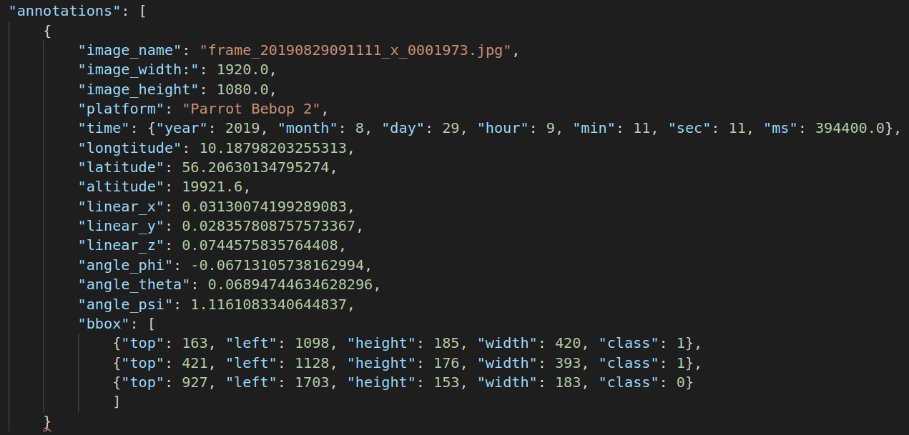

AU-AIR dataset is the first multi-modal UAV dataset for object detection in aerial images. It contains over 2 hours of raw video footage, over 30 000 labelled frames and over 130 000 object instances. Frames are annotates with time, GPU, IMU, attitude and time of the UAVs.
The purpose of this dataset is to meet vision and robotics for UAVs having the multi-modal data from different on-board sensors, and pushes forward the development of computer vision and robotic algorithms targeted at autonomous aerial surveillance.
For more information please read AU-AIR: A Multi-modal Unmanned Aerial Vehicle Dataset for Low Altitude Traffic Surveillance.
Annotations are presented in JSON format. The header of the JSON file contains the project's metadata (contributors, licences, object categories etc.).
The rest of the file contains a JSON array, each element containing both angle shot data and object annotation data data as follows:
The training data (frames) can be downloaded here.
Annotations can be downloaded here.
The authors also offer a Python library for quick access to the data and annotations.
No models have been found for this dataset.
No benchmarks have been found for this dataset.
No associated challenges have been found for this dataset.
Dataset licenced under the CC BY 4.0 licence.